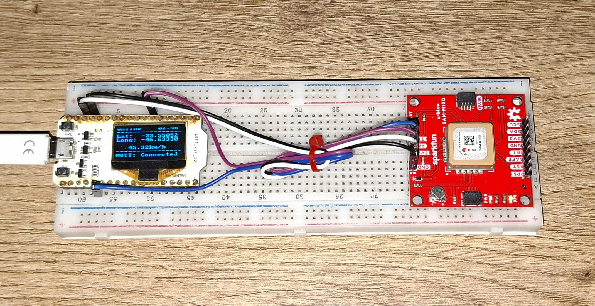

Project Report: IoT Vehicle Tracking System
1. Introduction
The objective of this project is to develop an IoT-based vehicle tracking system capable of collecting, transmitting, storing, and visualizing GPS location data in real time. The system monitors geographic coordinates, altitude, speed, heading, and device status, allowing users to track vehicle movements and review historical routes through a web dashboard.

Figure 1 - Hardware Circuit
2. System Architecture
The solution is composed of embedded hardware, cloud communication services, a data storage layer, and a visualization interface.
Technologies Used
| Component | Description |
|---|---|
| ESP32 | Provides Wi-Fi connectivity and system control |
| SAM-M10Q GPS Module | Acquires GPS positioning data |
| OLED Display (128×64) | Displays device status and diagnostic information |
| ESP-IDF | Development framework for ESP32 |
| FreeRTOS | Real-time operating system used by ESP-IDF |
| HiveMQ | MQTT broker hosting platform |
| Node-RED | Message processing, automation, and user dashboard |
| InfluxDB | Time-series database used to store tracking data |
System Diagram
3. ESP32 Application Architecture
The embedded application follows an event-driven architecture using the ESP-IDF Event Loop.
Application Components
Component Responsibilities
GPS Module
Responsible for communication with the SAM-M10Q GPS receiver and generation of location events.
System API
Handles MQTT communication, system synchronization, and internal time management.
Wi-Fi Manager
Responsible for network connectivity and reconnection procedures.
OLED Display
Displays operational information and diagnostics.
Command Interface
Receives commands through the serial interface, such as Wi-Fi credential updates.
4. Security
Communication between devices and the MQTT broker uses MQTTS (MQTT over TLS). Certificate validation is performed using the ESP-IDF built-in certificate bundle. MQTT authentication requires valid user credentials.
Node-RED also connects securely to the broker using TLS authentication.
InfluxDB operates locally and is not exposed to external networks, reducing the attack surface of the system.
5. Sequence Diagrams
Wi-Fi Configuration
MQTT Connection and Device Status
The device publishes its online status using MQTT Last Will and Testament (LWT).
Topic
/tracking_device/<id>/status
Payload
{
"online": true
}
Device State Transmission
Topic
/tracking_device/<id>/state
Payload
{
"latitude": 0.0,
"longitude": 0.0,
"altitude": 0.0,
"speed_kmh": 0.0,
"course_deg": 0.0,
"satellites": 0,
"hdop": 0,
"timestamp": 0,
"time_on": 0
}
Device Information Transmission
Topic
/tracking_device/<id>/info
Payload
{
"ip": "192.168.1.100",
"timestamp": 0,
"time_on": 0
}
6. Node-RED Flows
Get Last Device State
Queries InfluxDB for the latest known position of each device within the last 30 days and displays the results on the map.

Clear Paths
Removes all displayed routes from the map interface.

Store Device State
Processes incoming state messages and stores them in InfluxDB.

SIM Device
Generates simulated GPS data for testing and demonstration purposes.

Update Device Information
Updates the dashboard with current device information and provides actions such as focusing the map on a selected device or retrieving historical routes.

7. User Interface
No Connected Devices
Dashboard state when no devices are online.

Simulated Device Online
Dashboard displaying an active simulated device.

Historical Route Visualization
Dashboard displaying the historical route of the simulated device.

8. Conclusion
The developed system successfully demonstrates an end-to-end IoT tracking solution capable of collecting GPS information, transmitting data securely through MQTT, storing historical records in a time-series database, and providing real-time visualization through a web dashboard. The modular architecture based on ESP-IDF, FreeRTOS, Node-RED, and InfluxDB allows the platform to be easily extended for additional telemetry data, fleet monitoring, and advanced analytics.